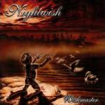

|
|
||
Nightwish : Wishmaster (2000) |
|

http://www.nightwish.com |
1. She is my Sin 4:45 |
9.2/10 |
|
Wishmaster es el último disco de estudio de los finlandeses Nightwish, donde mezclan como nadie el sonido más clásico del power metal con la majestuosidad de los teclados y la maravillosa voz, entrenada en estilo clásico, de Tarja Turunen para conseguir un sonido melodioso, orquestal, profundo y potente. El disco comienza en "She is my Sin", con una intro que cualquier banda de power metal progresivo firmaría, con la voz de Tarja surgiendo enseguida, angelical, entre las guitarras y la batería. El estribillo es la prueba palpable, audible debería decir, de que melodía y potencia pueden ir de la mano, y que el canto clásico puede ir perfectamente acompañado de heavy metal. "The Kinslayer" es más rápida, potente y de ritmo más marcado que la anterior. Los teclados y las guitarras se complementan perfectamente. Las voces le aportan emoción, potencia y melodía. Aparece una voz masculina en contraposición a la femenina, creando esta tensión tan característica del metal gótico. Los coros le aportan atmósfera y el toque definitivo. El tercer corte, "Come Cover Me", es una canción más lenta, donde en la suave introducción musical se puede apreciar el sonido de una flauta, que pronto desaparece bajo un manto de guitarra y teclados. En el estribillo se aprecia muy bien la celestial voz de Tarja. "Wanderlust" comienza con un aire más neoclásico, si cabe, que las anteriores. Después un buen ritmo, la voz apresurada, un fantástico estribillo, algunos elegantes solos de teclado y de guitarra y un final majestuoso. La quinta canción, "Two for Tragedy", es una balada ejecutada principalmente por los teclados y por una voz cargada de sentimiento y emoción. "Wishmaster" tiene un ritmo rápido y marcado, voces potentes, riffs de guitarra marcando la melodía con los teclados aportando variaciones, y un estribillo pegadizo y que es de los momentos más emocionantes del disco. El séptimo tema, "Bare Grace Misery", comienza con un cierto gusto a los 80, pero evoluciona pronto al sonido más típico de Nightwish. "Crownless" tiene un aire más progresivo que el resto del disco y un ritmo vertiginoso llevado por el doble bombo, con cambios, eso si. La voz de Tarja fantástica como siempre. La novena pista, "Deep Silent Complete", es otra de las de ritmo rápido y una fantástica linea melódica sustentada por los teclados y reforzada por la guitarra. Cambios de ritmo cuando canta Tarja y un cierto aire atmosférico terminan de definir esta canción. "Dead Boy's Poem" es un tema lento, complejo, de atmósfera delicada, instrumentación muy cuidada y una segunda parte más potente que la primera. "FantasMic" tiene de nuevo trazas de metal progresivo, ritmo marcado, y una elaborada malla de voces, y coros. El principio es más complejo, con más voces y coros, la media parte es más suave y tranquila aunque el final, más rápido y potente, recupera los coros. "Sleepwalker" es un bonus track, de ritmo tranquilo y que da una oportunidad más de apreciar la deliciosa voz de Tarja, sin duda el elemento diferenciador de Nightwish. |
||
Rubén Béjar |
||